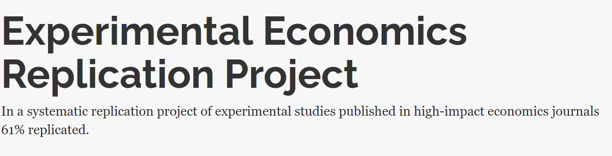
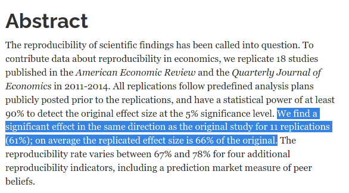
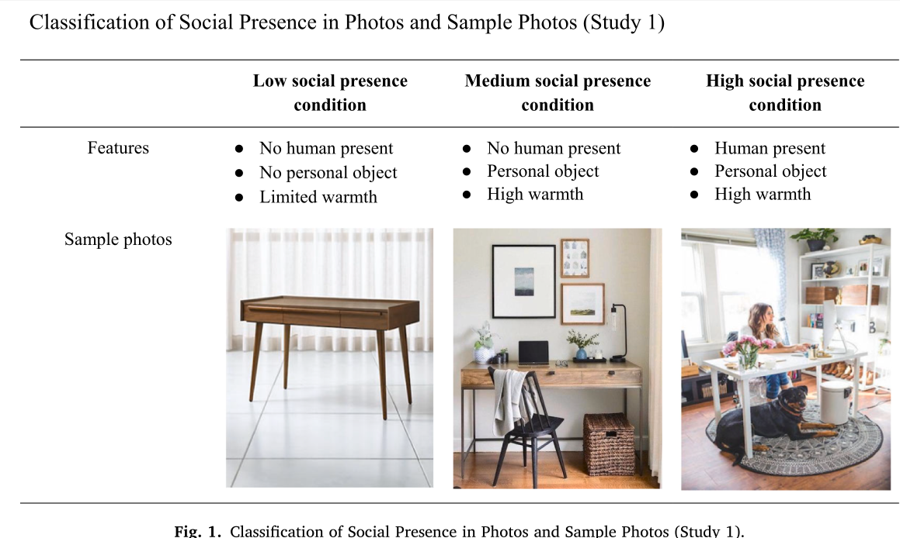

SSC Annual meeting
Wednesday, May 28, 2025
Definition of different dimensions of reproducible research (from The Turing Way project, illustration by Scriberia).

Brucks and Levav (2022)
In a laboratory study […] we demonstrate that videoconferencing hampers idea generation because it focuses communicators on a screen, which prompts a narrower cognitive focus. Our results suggest that virtual interaction comes with a cognitive cost for creative idea generation.
(Subjective) measurement of the number of creative ideas, variety of models that can be fit, comparing different tests.
Moon and VanEpps (2023)
Across seven studies, we provide evidence that quantity requests, wherein people consider multiple choice options of how much to donate (e.g., $5, $10, or $15), increase contributions compared to open-ended requests.

Our findings offer new conceptual insights into how quantity requests increase contributions as well as practical implications for charitable organizations to optimize contributions by leveraging the use of quantity requests.
Model: Tobit type II regression and Poisson regression (independence test)
Duke and Amir (2023)
Customers must often decide on the quantity to purchase in addition to whether to purchase. The current research introduces and compares the quantity-sequential selling format, in which shoppers resolve the purchase and quantity decisions separately, with the quantity-integrated selling format, where shoppers simultaneously consider whether and how many to buy. Although retailers often use the sequential format, we demonstrate that the integrated format can increase purchase rates.

Model: logistic regression.

6. Social presence in social media products
Poirier et al. (2024)
